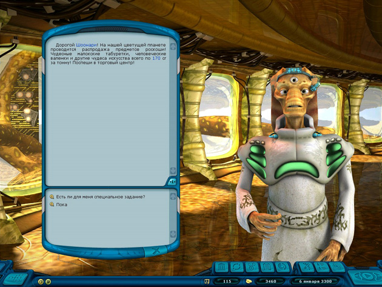

Руководство рейнджера > Экран
планеты > Здание правительства (G)
|
Руководство рейнджера > Экран
планеты > Здание правительства (G)
|
| Здание правительства (G) В здании правительства игрок встречается с чиновником проживающей на данной планете расы. Здесь он может: • получить правительственное задание • услышать ценные советы по торговле • приобрести карты ближайших звездных систем • дать взятку для улучшения отношений • внести залог для освобождения заключенного из местной тюрьмы Общение с чиновником организовано в виде диалога, варианты ответов игрока располагаются в нижней части диалогового окна. |

| Совет. Для того чтобы запомнить содержимое текущего
окна, щелкните по значку Правительственные задания Правительственные задания являются важной составляющей игры, поэтому выполнять их довольно полезно. За это игрок может получить деньги, награды, расположение данной расы или ценные вещи (артефакты). Только имейте в виду, что если вы не уложитесь в срок контракта, то не только ничего не получите, но и отношение данной планеты к вам ухудшится. Совет. Прежде чем выбрать сложность задания (и его срок), воспользуйтесь галактической картой для того, чтобы прикинуть, как быстро вы сможете долететь до указанной в задании звезды. Всегда выбирайте срок правительственного задания с достаточным запасом времени, на случай непредвиденных обстоятельств! |